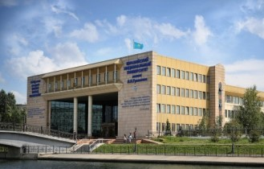
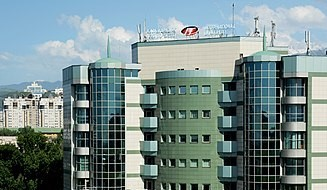
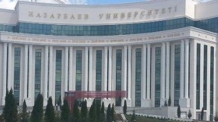
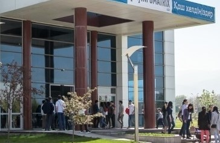

Following independence from the Soviet Union, a major economic depression
cut "public financing" for education in Kazakhstan, "which dropped from 6%
of gross domestic product in 1991 to about 3% in 1994, before rising to 4%
in 1999. Elementary- and secondary-school teachers remain badly underpaid;
in 1993 more than 30,000 teachers (or about one-seventh of the 1990 teaching
staff) left education, many of them to seek more lucrative employment.
In 1994 Kazakhstan had 8,575 elementary and secondary schools (grades one
through eleven) attended by approximately 3.2 million students, and 244
specialized secondary schools with about
222,000 students. In 1992 about 51 percent of eligible children were
attending some 8,500 preschools in Kazakhstan. In 1994 some 272,100
students were enrolled in the republic's sixty-one institutes of higher
learning. Fifty-four percent of the students were Kazakh, and 31 percent
were Russian.[citation needed]
Universities in Kazakhstan

L.N. Gumilyov Eurasian National University
The L. N. Gumilyov Eurasian National University (ENU) (Kazakh: L.N. Gýmilev
atyndaǵy Eýrazııa ulttyq ýnıversıteti (EUÝ), Russian: Евразийский национальный
университет имени Л.Н. Гумилёва (ЕНУ)), is a Kazakh national research university
and largest institution for higher education in Nur-Sultan.

International Information Technology University
International IT University or International university of information technologies
(Kazakh: Халықаралық ақпараттық технологиялар университеті, Halyqaralyq aqparattyq
tehnologııalar ýnıversıteti) - established in close collaboration with educational
organization iCarnegie which represents American IT university Carnegie Mellon in
2009 by order of President of Kazakhstan.

Nazarbayev University
Nazarbayev University (NU) is an autonomous research university in
Nur-Sultan, the capital of Kazakhstan. Founded as a result of the
initiative of the first President of Kazakhstan, Nursultan Nazarbayev
in 2010 (June),[1] it is an English-medium institution, with an
international faculty and staff.
The university management bodies are the Executive Board, Board of
Trustees and the Supreme Board of Trustees. The Chairman of the
Supreme Board of Trustees is the former President of the Republic
of Kazakhstan, Nursultan Nazarbayev.[

Suleyman Demirel University
SDU is committed to developing, through outstanding knowledge
creation and delivery, graduates who are global citizens and
whose values are formed through holistic education. These skilled
professionals and disseminators of knowledge and innovation will
enhance the lives of fellow citizens, the economy, and the nation.